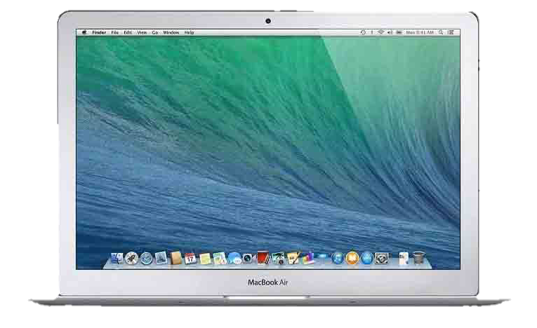

MacBook Air with i7 2.2GHz Processor
Brilliant. In every way.

MacBook Air with i7 2.2GHz Processor
- Display: 13.3-inch Retina display with True Tone technology
- Processor: 8th-generation quad-core Intel Core i7 processor, Turbo Boost up to 3.2GHz
- Memory: 8GB or 16GB of 2133MHz LPDDR3 onboard memory
- Storage: 256GB, 512GB, 1TB, or 2TB SSD
- Graphics: Intel Iris Plus Graphics 655
- Ports: Two Thunderbolt 3 (USB-C) ports with support for charging, DisplayPort, Thunderbolt (up to 40Gb/s), and USB-C 3.1 Gen 2 (up to 10Gb/s)
- Wireless: 802.11ac Wi-Fi wireless networking; IEEE 802.11a/b/g/n compatible. Bluetooth 5.0 wireless technology
- Camera: 720p FaceTime HD camera
- Audio: Stereo speakers; three-mic array with directional beamforming; 3.5 mm headphone jack
- Battery and Power: Up to 12 hours wireless web, up to 13 hours iTunes movie playback, up to 30 days of standby time. Built-in 49.9-watt-hour lithium-polymer battery; 30W USB-C Power Adapter; USB-C power port
- Dimensions: Height: 0.16–0.63 inch (0.41–1.61 cm); Width: 11.97 inches (30.41 cm); Depth: 8.36 inches (21.24 cm)
- Weight: 2.8 pounds (1.25 kg)